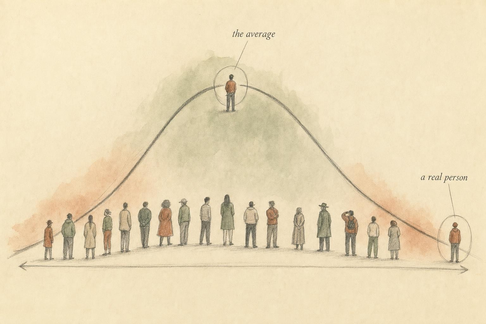

The Body That Was Never the Default
Female physiology is not a smaller, lighter edit of male physiology. It is its own system, and this course studies it on its own terms, including where the evidence runs thin.
Marisol is 34, and three months ago she decided to train for her first half marathon. She is not a researcher and she is not a clinician. She is a learner who likes to understand things before she does them, so before her first structured week of training she went looking for guidance on how to plan her runs around her menstrual cycle. What she found was a firehose of confident, contradictory advice. One source told her to save her hardest efforts for the days right after her period ends, because rising estrogen supposedly primes her for stronger performance. Another told her to expect a performance dip in exactly that window and to schedule easier runs instead. A third assured her the whole idea was overblown and that cycle phase barely matters at all. All three were stated with the same flat certainty, and all three could not be true at once.
Marisol did what a careful learner does. She tried to trace the claims back to their source. What she found, again and again, was not a mountain of rigorous, replicated research quietly settled and simply repackaged for a popular audience. It was a comparatively small pile of studies, many of them with a handful of participants, many of them contradicting one another, and more than a few built on research that never enrolled women in the first place. The confidence of the advice and the thinness of the evidence behind it did not match. That mismatch is the reason this course exists, and it is the first thing this chapter asks a learner to notice, before a single hormone or cycle phase is even named.
What made the search more frustrating was how often the citations, when Marisol actually clicked through to them, turned out to be thin on their own terms. One widely shared claim traced back to a study of eight women. Another traced back to a review article that was itself summarizing a handful of small trials, several of which reported results that contradicted each other once she read past the abstract. A third claim, stated as though it were settled physiology, turned out to rest on a study conducted entirely in men, with the female-specific conclusion added afterward as an assumption rather than a tested result. None of this made Marisol distrust exercise science as a whole. It made her want a way to tell the difference between a claim that had earned its confidence and a claim that had simply borrowed it.
Marisol is not a case to be diagnosed and she is not a problem this chapter solves. She is a thread we will return to a few times in this chapter, a stand-in for an honest, common experience: wanting to understand a body that the field of exercise and sport science spent most of its history not studying. By the end of this chapter you will understand exactly why her search turned up so much noise, and you will have two working habits, reading the evidence honestly and knowing where education stops, that carry through every chapter that follows.
A body that was measured as the exception
Every field of physiology quietly leans on a reference body. Textbook diagrams, dosing tables, performance benchmarks, and training templates are all built from an implied standard subject whose responses count as normal, against which every other body gets measured as a variation. For most of the history of exercise and sport science, that standard subject was not announced as male. It simply was male, by default, so consistently that the choice rarely needed defending. A body that differs from the norm gets treated as the noisy case, the harder recruitment, the complication to control for or quietly leave out of the sample. That is exactly what happened to female physiology, and it happened for generations.
The historical reasoning, on the rare occasions it was stated outright, was that the female body is too variable to study cleanly. A menstrual cycle introduces fluctuating estrogen and progesterone, so the thinking went, and those fluctuations add statistical noise a researcher would rather avoid. Recruiting men produced a cleaner signal at a lower cost, and the resulting findings were simply assumed to generalize to everyone. Ansdell and colleagues (2020) trace this posture back through decades of exercise physiology, and their review makes a point worth sitting with: female physiology is not a smaller, diminished version of male physiology, waiting to be described once the male version is fully mapped. It is distinct. Cardiovascular responses, neuromuscular fatigue patterns, substrate use during exercise, thermoregulation, and hormonal signaling all differ in kind, not merely in degree, between male and female bodies. Treating one as the baseline and the other as a variation on it was never a neutral scientific choice. It was a choice that happened to be convenient for the researchers making it.
This is the first idea a learner needs to hold onto, because it reframes everything that follows in this course. When you eventually read that a training or nutrition recommendation was built and tested almost entirely on male participants, the honest response is not to assume the finding simply extends to a female body with the numbers scaled down for smaller frame size. The honest response is to ask whether the underlying system being described, a hormonal axis, a substrate pathway, a bone remodeling process, was ever actually studied in the population the advice is now being handed to. Very often, it was not.
The exclusion was not limited to sport and exercise science, and a learner benefits from seeing the wider pattern this field inherited. For much of the twentieth century, women of reproductive age were routinely excluded from early-phase drug trials in the United States, a policy position formalized by the Food and Drug Administration in 1977 out of concern for fetal exposure in the event of an undetected pregnancy, a concern that, applied broadly and indefinitely, ended up excluding healthy, non-pregnant women from research they had every right to be included in. It took until 1993, with the National Institutes of Health Revitalization Act, for United States policy to formally require the inclusion of women and minorities in federally funded clinical research. Sport and exercise science was never bound by that same regulatory history, but it absorbed the same underlying assumption: that the male body was the default research subject, and that including women introduced a complication best avoided rather than a population worth understanding on its own terms. A field does not need a written policy to inherit a habit. It only needs decades of researchers quietly making the same convenient choice.
It also helps to say plainly what the excluded physiology actually includes, because the phrase hormonal complexity can sound abstract until it is grounded in specifics. Cardiovascular responses to exercise differ by sex in stroke volume and vascular compliance. Neuromuscular fatigue patterns differ, with some evidence pointing to differences in fatigue resistance during sustained submaximal contractions. Thermoregulation differs, shaped in part by the same ovarian hormones that shift across a cycle. Bone responds to loading differently across a lifespan that includes puberty, the reproductive years, and the hormonal transition of perimenopause and menopause, each with its own physiology. None of these differences are minor footnotes to an otherwise identical system. Each one is a place where research built on men alone simply does not transfer cleanly, no matter how confidently it gets repackaged for a general audience.
How thin the evidence actually is
A learner does not have to accept the historical argument on faith, because researchers have gone back and counted, directly, who actually appears in the published literature. The numbers are not subtle. According to Costello, Bieuzen, and Bleakley (2014), an audit of 1,382 original research articles published across three major sports and exercise medicine journals found that female participants made up only 39 percent of the more than six million people studied, with the average article drawing 35 to 37 percent of its sample from women. The authors' conclusion was blunt: practitioners and researchers in sports and exercise medicine needed to become conscious of a gender disparity that had been allowed to sit unexamined in the foundation of the field.
That audit covered research up through roughly 2013. A learner might reasonably hope the picture improved with time, and it did move, slightly, though not nearly as far as the volume of popular advice would suggest. According to Cowley and colleagues (2021), a later audit spanning 2014 through 2020 across six major sport and exercise science journals, covering 5,261 publications and roughly 12.5 million participants, found that women still made up only about 34 percent of participants overall. Thirty-one percent of the studies in that audit included men exclusively. Only six percent included women exclusively. The title the authors gave their paper says the rest: female athletes remain, in their words, invisible in a literature that keeps citing itself as the evidence base for everyone.
Put those two audits side by side and an uncomfortable pattern appears. Female representation did not climb steadily upward as the field matured and became more aware of the gap. It hovered in roughly the same narrow band across an entire decade, somewhere in the mid-thirties percent, while the volume of confident, cycle-based and sex-specific advice aimed at women multiplied many times over in that same period. The advice grew faster than the evidence that was supposed to support it. That gap between how much is claimed and how much is actually known is the single most important fact in this chapter, and Marisol found herself standing directly inside it the moment she searched for guidance on training around her cycle.
It is worth sitting with what a study design actually looks like on the wrong side of that gap, because the phrase "no significant sex difference found" is doing a lot of quiet work in the popular literature. A study that enrolls no women cannot report a sex difference at all, and a study with only a handful of female participants is often statistically underpowered to detect a real difference even when one exists. Both situations get summarized, informally, as though the underlying physiology were confirmed to be identical between men and women, when the honest summary is closer to "this was never adequately tested." A learner who reads carefully starts to notice how often a claim of no difference rests on a study that was never designed to find one in the first place.
The gap widens exactly where it matters most
If the overall shortfall were spread evenly across every topic, it would be a serious but manageable problem. It is not spread evenly. It concentrates hardest in the areas a learner most wants solid guidance on. According to Kuikman and colleagues (2022), who proposed a standardized protocol for auditing female representation in sport science and sport medicine research, the category of performance-enhancement research, the exact literature behind supplement timing, ergogenic aid protocols, and competitive performance strategies, drew only about three percent of its participants from women. Three percent. The topic that generates the most confident marketing claims aimed at active women rests on almost no data collected from women at all.
Kuikman and colleagues name the mechanism behind the gap plainly, and it is the same nineteenth-century excuse from the previous section, now dressed in modern methodological language. Female exclusion, they write, is driven in part by the perceived complexity of hormonal physiology. The menstrual cycle, hormonal contraceptive use, and the broader landscape of female reproductive endocrinology are treated as a confound to be avoided rather than a system worth the extra design effort to study properly. A separate audit by the same research group, examining acute carbohydrate intake guidance around exercise, found women made up only about 11 percent of participants across 937 studies, with nearly 80 percent of the sample male-only, and of the small number of studies that did include women, fewer than one in ten controlled adequately for menstrual status or hormonal contraceptive use. The guidelines a learner reads on how much carbohydrate to eat before a hard training session were built almost entirely on male digestion, male substrate use, and male hormonal patterns, then handed to everyone as if the underlying physiology were interchangeable.
The pattern does not stop at carbohydrate guidelines, and it does not stop once a learner leaves the reproductive years behind. Research on perimenopause and menopause, the hormonal transition that eventually touches every woman who lives long enough to reach it, remains sparser still, often folded into general aging research without separating out the hormonal shift driving many of the changes observed. A learner working through this course will notice that the evidence base does not simply thin out for one narrow slice of life. It thins out unevenly across the entire female lifespan, with some stretches, puberty, the postpartum period, and the menopause transition among them, studied even less than the reproductive years already documented above.
Why complexity became an excuse instead of a reason to do better
It is worth pausing on that word, complexity, because it carries most of the weight in this chapter's argument and it deserves to be examined rather than simply repeated. Female reproductive physiology genuinely is more intricate to study than a male participant pool sampled at any point in an ordinary week. A learner does not need to minimize that fact to see the problem with how the field responded to it. According to Sims and Heather (2018), whose review focuses squarely on reducing scientific design ambiguity in studies that compare sexes or menstrual cycle phases, the biphasic rise and fall of estrogen and progesterone across a standard 28 to 32 day cycle meaningfully influences physiological responses that matter for exercise capacity and adaptation, and oral contraceptive use adds a further layer of complexity by introducing varying concentrations of exogenous hormones that behave differently from the body's own ovarian hormones. Sims and Heather are explicit that this complexity is exactly why applied research on women has remained limited, not because the questions could not be answered, but because too few studies bothered to define participants' reproductive status well enough to answer them properly.
That last point deserves emphasis, because it reframes the whole excuse. The problem was rarely that female physiology could not be studied rigorously. The problem was that studying it rigorously takes more planning than recruiting a convenience sample of men and calling the result general. According to Elliott-Sale and colleagues (2021), whose paper functions as a working guide for standards of practice in this exact area, sport and exercise science suffered for decades from a shortage of specialist knowledge about female physiology within the research community itself, combined with a reluctance to adapt experimental designs to account for the menstrual cycle, hormonal contraceptive use, pregnancy, and menopause. A further complication the authors highlight is that even researchers who wanted to study women well often lacked agreement on terminology and gold-standard methods, so the small amount of research that did include women was not always comparable from one study to the next. Elliott-Sale and colleagues do not treat any of this as an unsolvable problem. They lay out specific participant-selection criteria and experimental-design adaptations meant to make rigorous female-specific research the norm rather than the exception, which tells a learner something important: the barrier here was never that the female body defies careful study. The barrier was a field that, for a long time, chose not to build the careful study it required.
None of this is presented in this course to shame any single researcher or era. It is presented because a learner who understands why the gap exists is far better equipped to spot when a confident claim is quietly leaning on that same gap today. When you meet a sweeping statement about how women should train, eat, or recover, differently from how it was studied in men, ask a simple question: was this actually tested in women, with reproductive status properly defined, or was it extrapolated from a male dataset and relabeled? That single question will do more for a learner's evidence literacy than any amount of memorized hormone physiology.
There is also a plain economic story sitting underneath the methodological one, and a learner should see it clearly rather than assume the exclusion was purely a matter of scientific caution. Recruiting participants with a defined menstrual cycle phase or a documented hormonal contraceptive history takes longer, costs more, and shrinks the available pool of volunteers compared with recruiting anyone who walks through the door. Grant timelines and publication pressure reward faster, cheaper studies, and for a long time nobody outside the field was auditing the sex balance of the resulting literature closely enough to make the shortcut costly. Once the audits started, in the last decade or so, the shortcut finally became visible, which is a large part of why Costello and colleagues, then Cowley and colleagues, then Kuikman and colleagues, felt the need to publish the numbers at all. Naming a problem precisely is usually the step that precedes fixing it, and this field is still in the early stages of that process.
A working habit: grading the evidence honestly
Marisol's contradictory search results share a hidden feature. Every one of them was delivered with the same tone of certainty, regardless of how much or how little evidence actually stood behind it. A single small study, a well-replicated finding drawn from dozens of trials, and a plausible-sounding mechanism that has never actually been tested in women were all presented on the page as though they belonged to the same category of knowledge. They do not, and learning to tell them apart is the single most protective habit this course can hand a learner.
Clinical medicine has decades of experience formalizing exactly this kind of judgment, weighing not just whether evidence exists but how strong it actually is. This course borrows the spirit of that discipline in a simplified, three-tier form that a learner can apply in seconds to any claim.
Strong and replicated. Multiple independent studies, ideally including female participants with clearly defined reproductive status, point the same direction. The underlying mechanism is understood, and the effect has been observed more than once, in more than one research group. A learner can treat this tier with reasonable confidence.
Mixed or limited. Real evidence exists, but it is thin, inconsistent across studies, drawn from small samples, or extrapolated from male participants without direct confirmation in women. The claim is plausible and may well turn out to be correct, but it is not settled. This tier calls for a working hypothesis, held loosely, not a rule to follow.
Weak or speculative. The claim rests on mechanism alone, on a single small study, on animal or cell-culture data, or on confident extrapolation with no direct test behind it. It might turn out to be true. It has simply not yet earned a learner's confidence. A large share of the cycle-based training and nutrition advice circulating publicly lives in this tier, and honest practice means saying so plainly rather than borrowing certainty the evidence has not earned.
Notice what this three-tier habit does and does not do. It never asks a learner to dismiss an appealing idea outright. It asks a learner to attach the right confidence level to that idea, so a hunch dressed up in physiological language is never mistaken for a replicated finding. Every chapter ahead in this course will grade its central claims out loud using this same framework, and a claim's popularity or convenience will never be allowed to inflate its grade.
A worked example makes the habit concrete. Take the claim that low energy availability can suppress menstrual function and, over time, weaken bone. Multiple independent research groups, working from different populations and different methods, converge on the same conclusion, and the mechanism connecting energy deficit to reduced reproductive hormone signaling is well characterized. That claim earns the strong and replicated tier, and later in this course you will see exactly why. Now take the claim that a learner should schedule heavier resistance training sessions specifically in the days right after ovulation for a strength advantage. The mechanism sounds reasonable on paper, hormonal shifts do plausibly influence strength expression, but the direct trials testing that specific claim are few, small, and inconsistent with one another. That claim earns the weak or speculative tier, not because it is necessarily false, but because it has not yet done the work of proving itself. Holding both of those claims to the same standard, rather than letting the more appealing one borrow confidence from the better-supported one, is the entire exercise.
An average is a place on a curve. No one lives there.
Grading evidence protects a learner from one error, mistaking a hunch for a finding. A second habit guards against the mirror image of that error. Even a strongly graded, well-replicated finding still describes an average, a central tendency across a group, and no single person is the average. This matters everywhere in physiology, but it matters more in female physiology than almost anywhere else, because the sources of individual variation stack on top of one another.
Cycle length varies from one learner to the next, sometimes by more than a week. Whether ovulation occurs in a given cycle varies. Hormonal contraceptive type and formulation change the underlying hormonal landscape entirely, replacing an endogenous cyclical pattern with an exogenous one that behaves by different rules. Age, training history, sleep, energy availability, and stress all move the needle further still. A finding that holds true on average across a study population can be muted, absent, or even reversed for a specific individual, and a well-run study will usually say so directly, in its discussion of variability, even when a headline built from that same study leaves the nuance out.
This is precisely why this course speaks consistently in terms of system-level understanding rather than individual instruction. When a later chapter explains that estrogen tends to influence connective tissue laxity, or that substrate use shifts across cycle phases on average, it is describing how a system tends to behave across a population, not handing a learner a rule for next week's training plan. The distance between a population average and one particular lived body is the exact distance between education and prescription, and that distance is the reason this course has a firm boundary, which the next section makes explicit.
It is also worth naming that the average itself shifts across a lifetime, which makes a single fixed picture of female physiology even less useful than it first appears. The hormonal landscape of adolescence is not the hormonal landscape of the twenties or thirties, which is not the hormonal landscape of the years surrounding menopause. A learner in this course may be reading this chapter from any point along that timeline, and the system-level patterns described in later chapters will apply differently depending on where a given body sits within it. Treating female physiology as one static picture, rather than a set of related but distinct hormonal chapters across a lifespan, repeats the same flattening error this whole chapter has been arguing against, just aimed inward instead of outward.

An average is a location on a curve. No one lives there." data-image-idx="1" style="display:block;max-width:100%;max-height:75vh;height:auto;width:auto;margin:0 auto;cursor:pointer;">What this course actually covers
With the posture set, evidence-grading in hand, and the average-versus-individual distinction installed, it is worth mapping the ground this course will actually walk. Chapter two begins with the conversation between brain and ovary, the hormonal architecture that produces a cycle in the first place, tracing how the hypothalamus and pituitary gland signal the ovaries and how that signal changes across roughly a month. From there the course moves into the two acts and one pivot of a single cycle, the follicular phase, ovulation, and the luteal phase, examining what each hormone is actually doing rather than what a headline claims it is doing.
A dedicated chapter treats the cycle as what clinical literature increasingly calls a fifth vital sign, a real physiological signal worth learning to read, alongside honest limits on what tracking apps and at-home tests can and cannot tell a learner about ovulation and fertility. That chapter draws a careful line between signals with genuine physiological grounding, a sustained shift in resting body temperature after ovulation, for instance, and signals marketed with more confidence than the underlying validation studies actually support. Contraception gets its own chapter as well, approached by mechanism rather than by brand name, so a learner understands what a given method is actually doing to the underlying hormonal system it interrupts or replaces, without this course ever telling a learner which method to choose. That decision belongs to a learner and a prescribing clinician together, weighing a full medical history this course has no access to and no business substituting for.
Two chapters address what happens when the cycle goes quiet or the body is asked to run on too little fuel for too long, covering the physiology of low energy availability and the pattern clinicians call relative energy deficiency in sport, often written as RED-S. According to Mountjoy and colleagues (2018), whose consensus statement on behalf of the International Olympic Committee remains the reference framework for this topic, low energy availability can impair metabolic rate, menstrual function, bone health, immune function, and cardiovascular health, in an athlete of any sex, and a missed or irregular period can be one of the earliest visible signals of that broader strain. According to Saadedine and colleagues (2023), the related pattern known as functional hypothalamic amenorrhea accounts for roughly a third of all cases of secondary amenorrhea, meaning the loss of previously regular periods, and it carries real long-term consequences for bone density, cardiovascular health, and cognition if it goes unaddressed. This course will teach a learner to recognize that pattern. It will not diagnose it, and neither should a learner, which the next section addresses directly.
Estrogen's role in bone gets a full chapter of its own, because bone is living tissue that remodels constantly under hormonal influence, and understanding that relationship matters well beyond the athletic population this course sometimes uses as its examples. That chapter connects the energy availability and amenorrhea material directly to long-term skeletal health, since the same hormonal suppression that halts a cycle can quietly reduce bone mineral density in the background long before an injury makes the problem visible. Later chapters turn to training and nutrition directly, weighing what current evidence actually supports about structuring effort and fueling around cycle phase against what remains speculative, using the same three-tier grading habit built earlier in this chapter, and separating what genuinely differs by sex from what has simply never been tested carefully enough to know. The course closes with postpartum physiology, a period of rapid, individualized change that deserves careful physiological explanation and an unusually firm reminder that generic timelines and templates do not serve a body still reorganizing connective tissue, hormone levels, and energy demands after pregnancy and birth.
Notice the thread running through every one of those topics. Each one sits, to some degree, inside the exact evidence gap this chapter just documented. Cycle physiology, fertility signals, contraception, amenorrhea, energy availability, bone, training, nutrition, and postpartum recovery are all areas where confident public advice has historically outrun the data collected to support it. This course will not pretend that gap does not exist simply because it would make for a tidier chapter. It will name the gap honestly, chapter by chapter, exactly where it appears.
The line this course does not cross
Here is the firmest boundary in this course, and it does not move regardless of how interesting a topic gets. This course is education about how female physiology and the reproductive system work across the reproductive years and beyond. It is not diagnosis. It is not treatment. It is not a prescription of training, nutrition, medication, contraception, or fertility protocols for any specific person, including a learner working through this material for their own understanding.
That boundary is not a legal formality bolted onto otherwise unrestricted material. It reflects what education can and cannot honestly accomplish. Understanding a mechanism tells a learner how a system tends to behave across many people. It does not, and cannot, tell a learner what is actually happening inside one particular body on one particular day, and it certainly cannot tell a learner what to do about it. Those are clinical judgments that depend on a full history, an examination, often laboratory testing, and the accountability of a professional who takes direct responsibility for the person in front of them. No amount of reading replaces that relationship.
The boundary is especially firm around three areas this course will keep returning to. Hormonal contraception is one: these are medications with individual risk profiles shaped by a person's full medical history, and choosing, changing, or stopping one is a medical decision made with a clinician, never a decision this course will make for a learner. Amenorrhea, the loss of a menstrual cycle, is another, because it can signal something that genuinely needs evaluation rather than quiet reassurance. The postpartum period is the third, a phase of rapid, individualized physiological change where generic advice can cause real harm if it is followed as though it were personalized guidance. When this course reaches each of these topics, it will explain the physiology in full and then stop precisely at the boundary. It will not tell a learner what to take, when to stop taking it, or how to train through it.
A fair question is why a course would go to the trouble of explaining a mechanism in detail if it will not then tell a learner what to do with that explanation. The answer is that understanding changes the quality of a conversation a learner can have with a clinician, even though it does not replace that conversation. A learner who understands, in outline, how a hormonal contraceptive interacts with the axis that governs the natural cycle is better equipped to ask a specific, informed question at an appointment than a learner working from no framework at all. The same is true of a learner who understands what a missed period can signal, or what postpartum tissue is actually doing as it reorganizes. Education raises the quality of the questions a learner brings to a professional. It was never meant to answer those questions on a professional's behalf.
A note of humility belongs here as well, because it is easy for a course built from published research to sound as though research is the whole of the story. It is not. This course distills evidence, and it does that work carefully, but it does not replace the two forms of expertise that sit closest to an actual living body: the clinical judgment of a trained professional working directly with a patient, and the lived experience of the women who carry this physiology through every day of their lives, long before any study describes it back to them. Reading about a system is not the same as treating it, and it is not the same as living inside it. Holding that humility, without letting it collapse into false modesty about what careful evidence review can teach, is itself part of the skill this course is trying to build.
Female exclusion from research has been driven, in large part, by the perceived complexity of hormonal physiology. The complexity is real. It was never a reason to look away from it. A system this consequential is exactly the kind of system worth the extra work of studying properly.
Synthesized from Sims and Heather (2018) and Kuikman et al. (2022)
Key Takeaways
- The reference body in exercise and sport science has historically been male by default, and female physiology is distinct from male physiology, not a smaller variant of it (Ansdell et al., 2020).
- Direct audits confirm the gap is real and has persisted for a decade: female participants made up about 39 percent of the sample in research through 2013 and about 34 percent from 2014 through 2020, with performance-enhancement research as low as 3 percent (Costello et al., 2014; Cowley et al., 2021; Kuikman et al., 2022).
- The exclusion was driven by the perceived complexity of hormonal physiology, treated as a reason to avoid studying women rather than a reason to design better studies (Sims & Heather, 2018; Elliott-Sale et al., 2021).
- Grade every claim in three tiers, strong and replicated, mixed or limited, or weak or speculative, and attach the honest confidence level rather than the convenient one.
- A well-supported finding still describes an average, and individual variation in cycle length, ovulation, contraceptive use, and life circumstances means no single learner is that average.
- This course is education. It is not diagnosis, treatment, or prescription, and the boundary is firmest around contraception, amenorrhea, and the postpartum period.
- Learn to recognize the pattern behind functional hypothalamic amenorrhea and relative energy deficiency in sport, understand that it may warrant clinical evaluation, and refer it onward rather than attempting to manage it (Saadedine et al., 2023; Mountjoy et al., 2018).
With the posture set and the two working habits installed, evidence-grading and the average-versus-individual distinction, the next chapter turns to the cycle itself: the conversation between brain and ovary, the hormonal architecture behind the follicular and luteal phases, and how ovulation is actually confirmed rather than assumed. You will apply the evidence grade built in this chapter to the very first wave of popular cycle-based claims, and you will meet, in more detail, the difference between a cycle that signals health and one that signals something worth referring onward.
References
Ansdell, P., Thomas, K., Hicks, K. M., Hunter, S. K., Howatson, G., & Goodall, S. (2020). Physiological sex differences affect the integrative response to exercise: Acute and chronic implications. Experimental Physiology, 105(12), 2007-2021. https://doi.org/10.1113/EP088548
Costello, J. T., Bieuzen, F., & Bleakley, C. M. (2014). Where are all the female participants in Sports and Exercise Medicine research? European Journal of Sport Science, 14(8), 847-851. https://doi.org/10.1080/17461391.2014.911354
Cowley, E. S., Olenick, A. A., McNulty, K. L., & Ross, E. Z. (2021). "Invisible sportswomen": The sex data gap in sport and exercise science research. Women in Sport and Physical Activity Journal, 29(2), 146-151. https://doi.org/10.1123/wspaj.2021-0028
Elliott-Sale, K. J., Minahan, C. L., de Jonge, X. A. K. J., Ackerman, K. E., Sipila, S., Constantini, N. W., Lebrun, C. M., & Hackney, A. C. (2021). Methodological considerations for studies in sport and exercise science with women as participants: A working guide for standards of practice for research on women. Sports Medicine, 51(5), 843-861. https://doi.org/10.1007/s40279-021-01435-8
Kuikman, M. A., Mountjoy, M., Stellingwerff, T., & Burr, J. F. (2022). Methodology review: A protocol to audit the representation of female athletes in sports science and sports medicine research. International Journal of Sport Nutrition and Exercise Metabolism, 32(2), 114-122. https://journals.humankinetics.com/view/journals/ijsnem/32/2/article-p114.xml
Mountjoy, M., Sundgot-Borgen, J. K., Burke, L. M., Ackerman, K. E., Blauwet, C., Constantini, N., Lebrun, C., Lundy, B., Melin, A. K., Meyer, N. L., Sherman, R. T., Tenforde, A. S., Klungland Torstveit, M., & Budgett, R. (2018). IOC consensus statement on relative energy deficiency in sport (RED-S): 2018 update. British Journal of Sports Medicine, 52(11), 687-697. https://doi.org/10.1136/bjsports-2018-099193
Saadedine, M., Kapoor, E., & Shufelt, C. (2023). Functional hypothalamic amenorrhea: Recognition and management of a challenging diagnosis. Mayo Clinic Proceedings, 98(9), 1376-1385. https://doi.org/10.1016/j.mayocp.2023.05.027
Sims, S. T., & Heather, A. K. (2018). Myths and methodologies: Reducing scientific design ambiguity in studies comparing sexes and/or menstrual cycle phases. Experimental Physiology, 103(10), 1309-1317. https://doi.org/10.1113/EP086797